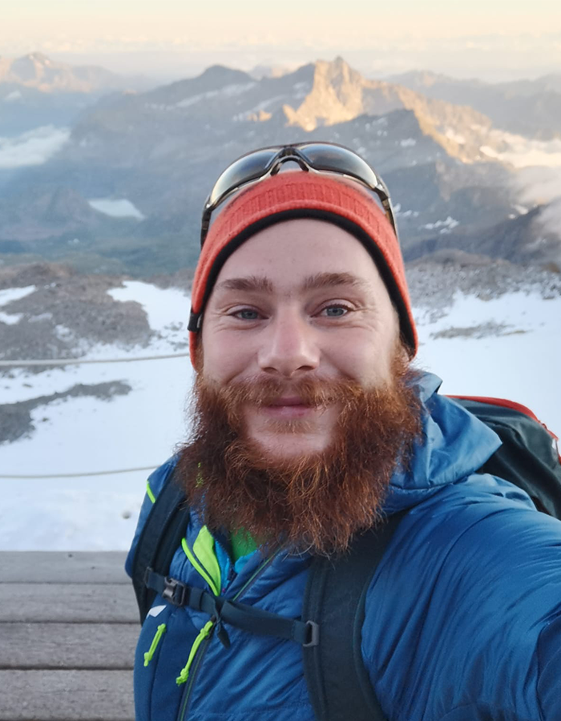

About Me
My name is Gabriel Dax and I have studied for my bachelor’s and master’s in Information Technology and Systems Management at the FH Salzburg. The study programs are characterized by a t-shaped course program, which teaches me basic knowledge in a wide range of information technology concepts. I put my focus on the software engineering specializations. While I wrote my master thesis at the German Aerospace Center (DLR), I am currently doing my doctoral studies at the technical university of Munich in the Professorship of Big Geospatial Data Management.
While my undergraduate and graduate studies have been in the engineering domain, my current doctoral study is located in the theoretical research field. Throughout my career path and education, I am able to combine the two worlds, engineering, and research.
Software engineering and research are like rock climbing; first, we must understand the problem before we are able to do something. Furthermore, plans aren’t solid always be prepared for the unexpected.
Research Interests
- (Spatial) Deep Learning
- Machine Learning and Data Mining
- Deep Learning on Custom Hardware
- Probabilistic Data Structures
- Data Compression
- Geospatial Data
Resume
Work Experience
10/2020 - Now Technical University of Munich, Research Assistant
12/2019 - 09/2020 Bundeswehr University Munich, Research Assistant
02/2019 - 07/2019 German Aerospace Center (DLR), Student Research Assistant
02/2017 - 07/2017 Fraunhofer Institute for Integrated Circuits (IIS), Internship
07/2016 - 08/2016 GMS Hutter, Internship
12/2012 - 09/2014 Optiplan, Technical Staff
12/2007 - 08/2012 Arvai Plasics, Tool Maker
Education
12/2019 - Now Technical University of Munich, Doctoral Studies (Dr. rer. nat.)
09/2017 - 11/2019 FH Salzburg, Information Technology and Systems Management (M.Sc.)
09/2014 - 07/2017 FH Salzburg, Information Technology and Systems Management (B.Sc.)
09/2012 - 07/2013 FH Joanneum, Qualification Course for University Entrance
Awards
Merit Scholarships: For the first and second semesters in the Bachelor’s program, as well as for the third and fourth semester in the Master’s program Information Technology and Systems Management, I received a merit scholarship from the Federal Ministry of Science, Research and Economics (AT).
Science Award: of the master thesis with the science prize of AK Salzburg.
Hackathon: With team “42”, three fellow students, and I won the IRIS 2016 Openlaws Hackathon in Salzburg. In two days they created a fully functional platform for extracting technical terms in a PDF.
Programming Languages
- Python
- C/C++
- MATLAB
- Java
Interests and Leisure Activities
Sport: Hiking and skiing in the Eastern Alps.
Free Time: Cooking, especially from the Asian kitchen.
Interests: Exploring places and cultures, I have never been to.